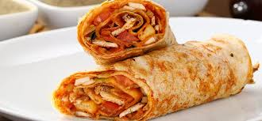
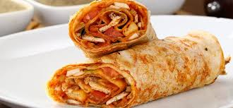
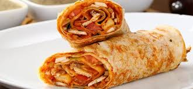

1. Bölüm
Bir varmış, bir yokmuş... Küçük bir kedi ormanda dolaşırken nefis bir döner kokusu almış. Heyecanla kokunun kaynağını bulmaya çalışmış.
 

Bir varmış, bir yokmuş... Küçük bir kedi ormanda dolaşırken nefis bir döner kokusu almış. Heyecanla kokunun kaynağını bulmaya çalışmış.

Koku onu, garip bir ağacın altına getirmiş. Ağaçta dönerler asılıymış! Kedi, ağzı sulanarak dönerlere bakmış.
Tam dönerlerden birini yiyecekken, dev bir kuş ağacın dalında belirip kediye şöyle demiş: "Bu dönerler benim!" Kedi ürkerek geri çekilmiş.
Ancak kuş, kedinin açlığını fark edince ona bir döner ikram etmiş. İkisi de ormanda keyifle dönerlerini yemişler ve arkadaş olmuşlar.